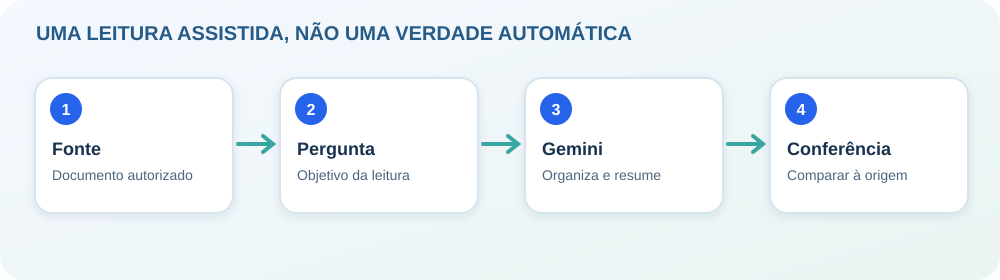

Uma pilha de comentários
A Café Horizonte tem comentários fictícios de clientes. A equipe deseja descobrir quais assuntos aparecem com maior frequência.
O que observar: Antes de pedir um resumo, defina qual material servirá de fonte.
Escolher o recurso pela natureza da tarefa: arquivo, Canvas, pesquisa ou fontes próprias.
Do bate-papo ao trabalho com informação real.
Uma biblioteca com bom assistente: ele localiza, mas você confere a fonte.
A Café Horizonte tem comentários fictícios de clientes. A equipe deseja descobrir quais assuntos aparecem com maior frequência.
O que observar: Antes de pedir um resumo, defina qual material servirá de fonte.
Uma pessoa pode organizar os livros de uma biblioteca, mas precisa saber quais livros consultou. O Gemini também deve trabalhar sobre uma fonte identificável.
O que observar: Resumo útil precisa manter ligação com o texto original.
Use o arquivo fictício disponível na aula. Peça para agrupar comentários e contar ocorrências sem criar informações ausentes.
O que observar: Confira as contagens diretamente no arquivo. Se diferirem, não use o resultado como fato.
A IA pode escrever uma síntese convincente e mesmo assim contar errado. Abra a fonte e faça uma conferência simples.
O que observar: Uma boa resposta distingue o que está nos registros daquilo que é sugestão de melhoria.
Imagine seis comentários fictícios de uma loja ou pet shop. Agrupe por assunto e confira se nenhum comentário foi esquecido.
O que observar: Você consegue apontar de onde veio cada conclusão?

Carregue 3 documentos fictícios no NotebookLM (se disponível) e pergunte; depois pergunte ao Gemini sem anexos.
Quando usar arquivo, Canvas ou pesquisa?
Próxima: transformar tudo isso em processo.
Biblioteca de prompts · Fontes e recursos · Mapa de oportunidades